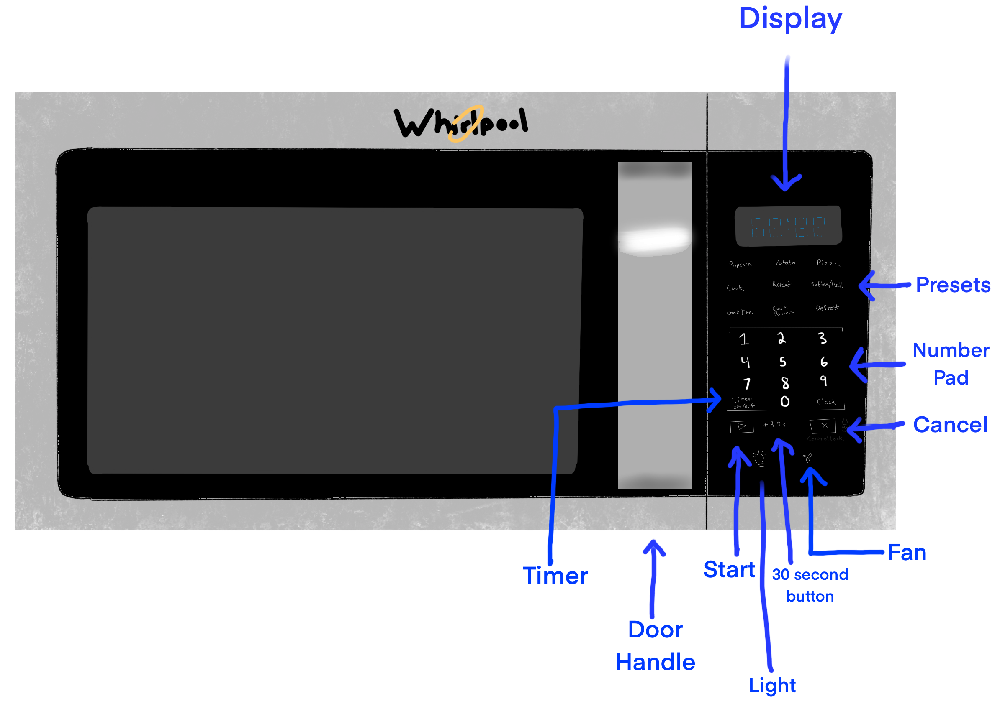

Introduction
In this project I've set out to learn how different people use microwaves to better understand the interface and how it could possibly be improved!
The Interface: Microwave
Microwaves allow people to quickly heat up or reheat food. They also offer many presets and other functions such as defrosting and a timer. Users can open the door and place their food inside. Next they either type in a time or select a preset or the 30 second button, and then click the start button to cook their food. The screen counts down the time left.
Questions
After users used the microwave, they were asked the following questions so I could better understand their experience:
- On a scale of 1-5 (new user to expert), how experienced are you with microwaves?
- On a scale of 1-5 rate your confidence cooking food in a microwave.
- What do you use the microwave for?
- If you use the microwave with food, what food?
- What can you use the microwave for?
- If there are features you know about but don't use: why do you not use these other capabilities of the microwave?
- On a scale of 1-5 how easy was using this microwave? (Super Hard -> Super Easy)
- Why did you make the selection you did?
- How did you use the microwave from start to finish?
- How did you decide on these actions?
- If you were to use the microwave again for this task, would you perform these same actions or do them differently?
- How did you know when you could retrieve your food?
- How effective was the handle?
- What does each button on the microwave do?
- What buttons on the microwave do you use the most?
- Why do you use these buttons the most?
- What buttons on the microwave do you use the least?
- Why do you use these buttons the least?
- What can or did you do to turn off the microwave?
- How did you decide how long to microwave this item?
- On a scale of 1-5 how confident were you in this choice?
- Did the food come out as expected?
- On a scale of 1-5, (never to every time) how often do items come out of the microwave as expected?
- If not 5: How do you handle when items come out in some unexpected way?
Subject Interviews
I chose 3 people to observe using the microwave, after which I asked them the above questions and recorded my observations.
Subject 1
Observations
- Used the microwave to warm a cookie
- Used only 30 second button to run microwave
- Was very observant and checked on cookie after 15 seconds, put cookie back and ran for full 30 seconds
Question Responses
- Responded that he is both experience and confident in using the microwave
- Expressed that they do not know a ton about microwave safety & best practices
- Did not show knowledge of microwave functions such as defrost and timer
- Said that he prefers to use the 30 second button and never uses the presets
- Responded that he used intuition to decide how long to microwave the cookie
Subject 2
Observations
- Heated up leftover pasta in microwave
- Didn't cover plate with pasta, later said, "I guess I should've covered it"
- Touched the food with his tongue to test its temperature
- Stopped microwave by opening the door
Question Responses
- Mentioned that the microwave was easy to use but the cancel button was hard to find
- Expressed he doesn't use the presets because he would rather rely on directions that come with food
- Mentioned that he knows to stop the microwave if he hears popping noises
- Mentioned that he does not know how the timer button works
Subject 3
Observations
- Used the microwave to make popcorn
- Referred to the popcorn packaging for "this side up" instructions
- Initially pressed the popcorn button but then stopped the microwave and typed in 3 minutes based on the popcorn package instructions
- Did not observe microwave while popcorn cooked
- Opened microwave early when popcorn stopped popping
Question Responses
- Explained that he likes to rely on a food's instructions over his own intuition or microwave presets
- Said he listened to the popping and opened stopped the microwave when the popping stopped
- Expressed that he normally types in the time and does not frequently use the 30 second button
- He says half the time he uses microwaves the food comes out to cold, he then puts it back in
Personas
Using the observations I constructed the following two empathy maps to represent two likely users of a microwave.
Storyboard
Using the empathy map of Stressed Sven I crafted a storyboard illustrating his experience with the microwave.